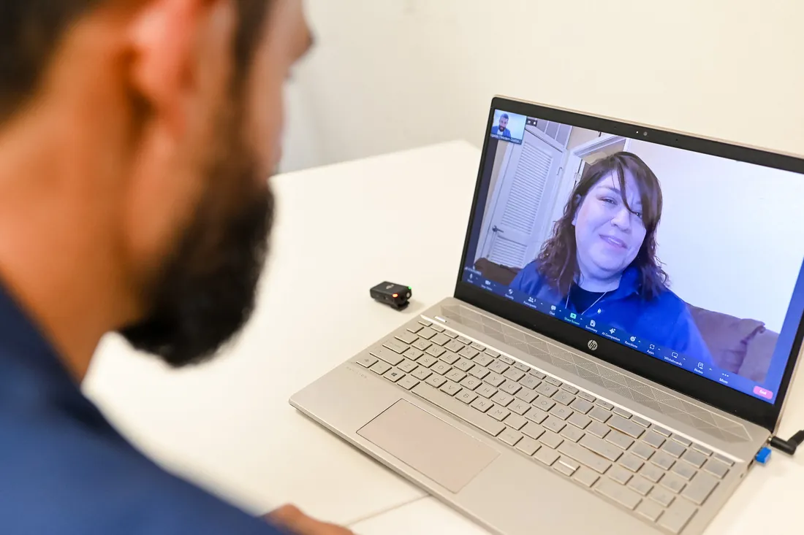
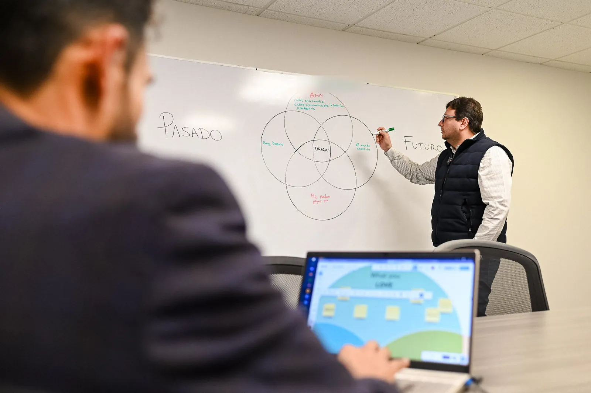
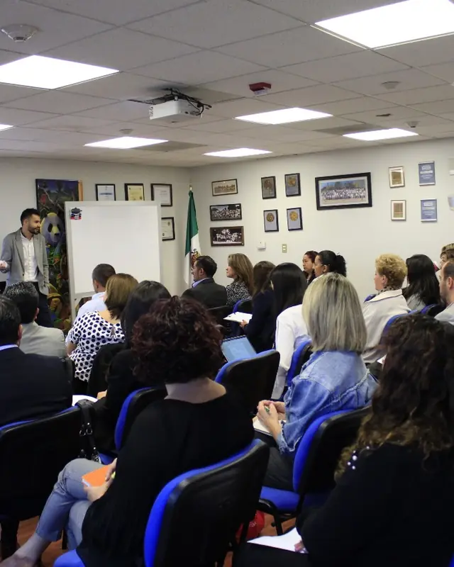
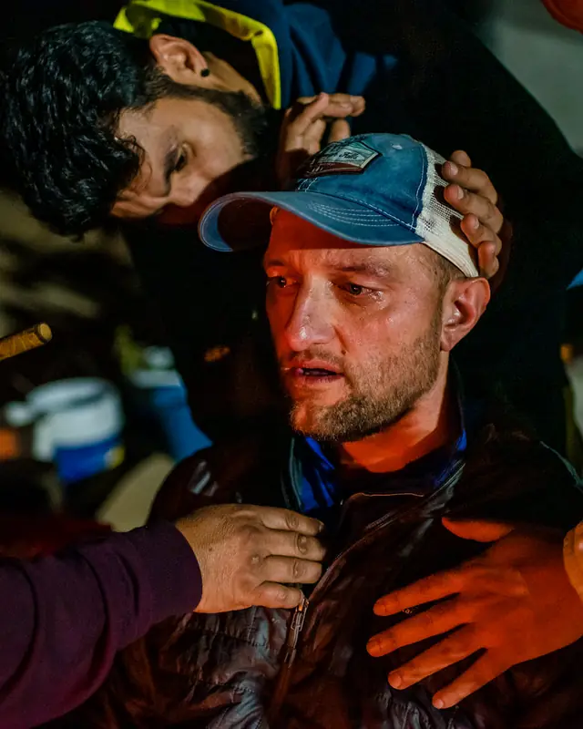
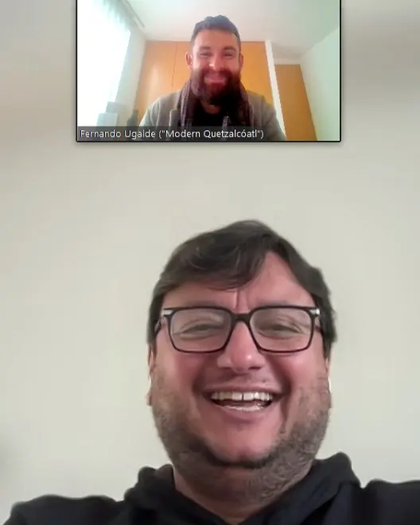
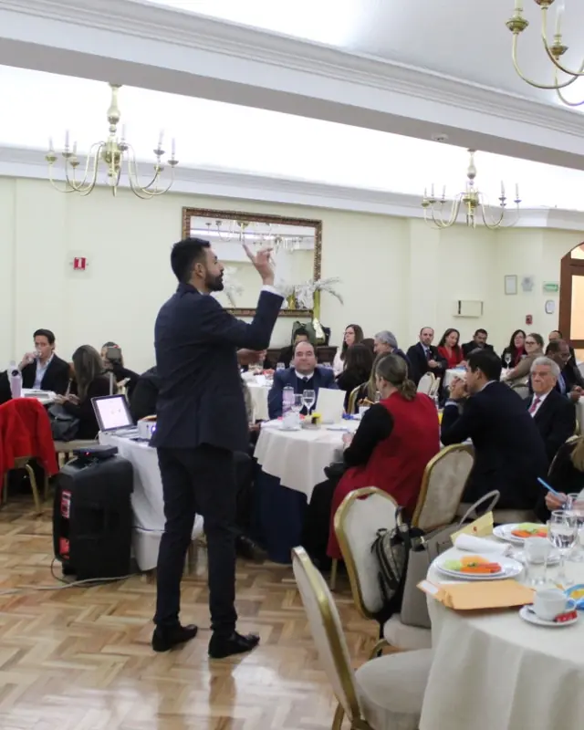
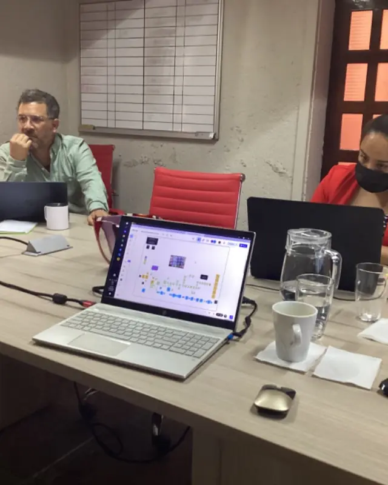
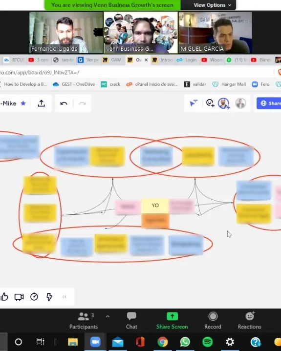
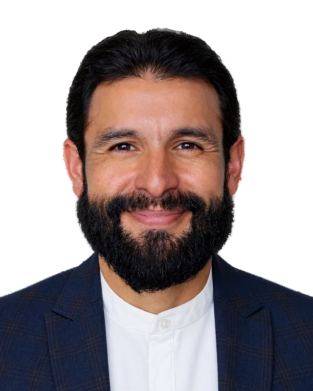
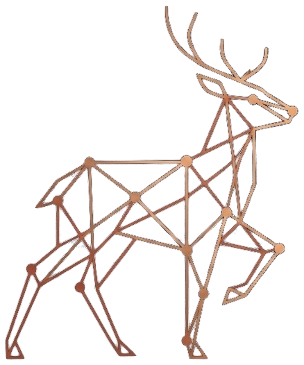

Lo nuevo se experimenta dentro de un espacio seguro, para que tu cerebro consolide patrones nuevos.
Innovación Humana
¿Sientes que vas sin rumbo aunque por fuera todo funcione?
Te acompaño a entender cuál es realmente el problema y a recuperar tu camino. Tú eliges lo que quieres lograr y enfrentar.
¿Ya lo tienes claro? Agenda tu Sesión de Mapeo.
- 14 años de campo
- 200+ procesos 1 a 1
- 4.5/5 satisfacción promedio


¿Es para ti?
¿Cómo sé si Fer U es para mí?
Ya hiciste terapia. Ya probaste otras formas de estar mejor. Y sigues volviendo al mismo lugar. Lo que ves afuera es el reflejo de una estructura interna que aún no has mirado de frente.
Seguramente ya tienes una explicación:
- Una relación que no funciona“Es tóxica; el problema es esa persona.”
- Reaccionas siempre igual“Así soy yo: ansioso, explosivo, frío.”
- Una máscara que ya pesa“Estoy bien; nadie tiene por qué saberlo.”
- Un peso que cargas desde hace demasiado“Ese duelo, esa pérdida, ese peso ya deberían haber pasado.”
- Estrés que ya normalizaste“Es el precio de la vida que vine a construir.”
- Hábitos que te dañan“Son solo mi válvula de escape.”
- Un equipo que no responde“Es su falta de capacidad o de responsabilidad.”
- Ventas que no despegan“Es el mercado, o mis clientes no tienen dinero.”
Cada explicación cubre una parte. Ninguna explica por qué se repite.
No es para ti si…
- Quieres que otro te diga qué hacer, en vez de construir tu propio criterio.
- Necesitas que todo sea cómodo: aquí se nombra, con respeto, lo que incomoda.
- Necesitas atención clínica ahora: esto no sustituye la terapia, la psiquiatría ni la atención de emergencia.
Es para ti si…
- Has logrado y has perdido, y para volver a lograrlo toca aclarar qué importa de verdad.
- Sabes hacia dónde vas, pero te falta el sistema interno para sostenerlo.
Si te reconociste, el siguiente paso no es otro libro ni otro retiro: es una Evaluación Espejo de 5 minutos, sin costo.
Definición
¿Qué es Innovación Humana?
Un ciclo de autoconocimiento, transformación y reinvención personal, acompañado de principio a fin.

No es
Terapia clínica — no diagnostica ni la sustituye; cuando hace falta, trabajamos en paralelo con un profesional
Sí es
Un camino propio — entiendes de dónde viene el problema, decides desde ti y redefines tu origen
No es
Coaching motivacional — no trabaja sobre el ánimo ni metas efímeras
Sí es
Diseño y medición — mapas, acción continua y decisiones validadas
No es
Una fórmula genérica de bienestar
Sí es
Un camino único sobre una estructura constante, respaldada por 14 años de campo
Qué es y qué no es: el alcance del servicio
Qué es y qué no es
Innovación Humana es acompañamiento personal y profesional uno a uno. No soy psicólogo, consejero, médico ni otro profesional de la salud con licencia. No diagnostico ni trato ninguna condición, y no receto, cambio ni opino sobre medicación. Mi servicio no sustituye la terapia, la psiquiatría ni la atención médica. Si trabajas con un profesional con licencia, con gusto trabajo en paralelo, con tu consentimiento. Los resultados varían de una persona a otra.
Si estás en crisis, llama o envía un mensaje de texto al 988 (EE. UU., con atención en español) o a tu número local de emergencias.
Evidencia
Lo que dicen quienes ya lo hicieron
"Con Fer logré comprenderme, y entender mis dinámicas de pareja, mi frustración profesional y por qué me sentía tan sin rumbo en mi vida. Me ayudó a recuperar mi soberanía personal, mi claridad profesional y a empezar una nueva familia con mi pareja."
"…por llevarme al límite, por tu mano firme que no me soltó cuando lo necesitaba, por no permitir que cayera, por hacerme responder mis propias dudas y preguntas, por enseñarme que yo tengo las respuestas."
"Estar bien con el increíble valor que puedo compartir con el mundo y, al mismo tiempo, saber y abrazar todo lo que me limita, me acerca cada vez más a alcanzar mi definición de éxito, que es la libertad de ser quien en esencia soy."
"Estamos unidos por muchas inseguridades y desafíos que me acompañaste a vencer. Desde aquí, te agradezco por siempre tener una palabra de aliento, por siempre tenderme una mano."
“Fer te ayuda a entender cuál es realmente el problema y cómo solucionarlo.”
“Fer te ayuda a volver a confiar en ti.”
“Fer te ayuda a recuperar tu camino y a conseguir lo que quieres en tu vida.”
“Fer es como un coach, chamán, psicólogo… y al mismo tiempo solo es Fer.”
En palabras de mis alumnos. Los resultados varían de una persona a otra. Ver más testimonios Presencia Real
El camino también se ve.
Sesiones, talleres, comunidad — el lado humano de este trabajo. Los encuentros ancestrales se realizan en México y son independientes del programa.






Así empieza
Tres pasos. Tú marcas el ritmo.
1
Evaluación Espejo
5 minutos, gratis y privada. Se llama Espejo porque lo que vives por dentro se ve por fuera.
2
Sesión de Mapeo
60 minutos en línea, tú y yo. Lees tu radar de 12 áreas y sales con una propuesta a tu medida.
3
Tu programa
Se arma contigo, según tu tiempo y tu presupuesto.
Sesión de Mapeo: $75 USD · precio de relanzamiento
50% menos que el precio regular. Se abona 100% a tu programa si te inscribes en 4 semanas. Llega con tu radar de 12 áreas hecho.
Cómo trabajamos: el método en 4 pasos
Tu camino no está escrito. El desarrollo de un ser humano no es un destino al que llegas: es un camino que se experimenta toda la vida. Lo que sí tiene principio y fin es nuestro trabajo juntos, en ciclos de introspección y creación.
1
Mapeamos
En tu Sesión de Mapeo ves lo que normalmente no puedes o evitas ver y decidimos por dónde empezar.
2
Identificamos
De forma continua vemos qué te limita en tu pensamiento, tu identidad, tus relaciones, tus estrategias, tus decisiones y tus resultados.
3
Acuerdas y experimentas
De cada hallazgo sale un acuerdo contigo mismo que pruebas en tu vida real: una nueva forma de vivirte y de desempeñarte.
4
Medimos y ajustamos
Revisas tu radar de 12 áreas como brújula. Lo que cambió ajusta el siguiente ciclo: el programa se arma sobre la marcha, a tu necesidad.
Es autoconocimiento, intención y acción continua: cómo piensas, cómo te ves y cuánta autonomía tienes para decidir. Tu realidad cambia porque cambia tu forma de ser, de pensar, de relacionarte y de decidir.
Tú y yo guiamos el proceso. Nadie te entrega un camino hecho.
Servicios y precios
Mis servicios no van en escalera. Dependen de tu capacidad económica, del tiempo que puedes dedicar y del esfuerzo que estás dispuesto a poner. Siempre empezamos por una Sesión de Mapeo y, desde ahí, lo armamos a tu medida.
- Reconexión · $800 USD · 7 sesiones 1:1 de 90 min. Para un momento difícil, una decisión o una limitante específica.
- Innovación Humana Básica · $1,400 USD · 12 sesiones 1:1 de 90 min, en 12 semanas. Un proceso completo de reinvención con menos herramientas, con una inversión más accesible.
- Innovación Humana Profunda · $3,800 USD · 24 talleres 1:1 de 2 h, en 4 meses. Re-arquitectura de tu identidad, hábitos, decisiones y relaciones, con tus blueprints en Miro.
- A medida · desde $5,000 USD · por aplicación, hasta 6 meses. Programa intensivo diseñado contigo, con especialistas invitados.
Pagos y garantía
- Precio de relanzamiento: los primeros 10 clientes en EE. UU. o hasta el 28 de febrero de 2027, lo que ocurra primero; esta página avisará cuando los precios suban.
- Sesión de Mapeo ($75): precio de relanzamiento, 50% menos que el precio regular; se abona 100% a cualquier programa si te inscribes en 4 semanas; no reembolsable en otro caso.
- Precios en USD para servicios online. Pago de contado o en pagos semanales o mensuales con tarjeta (Stripe), Wise, PayPal o transferencia bancaria; facturas bajo pedido.
- Garantía de satisfacción: si tu satisfacción promedio queda por debajo de 7.5/10 a partir de la semana 4 y cumpliste el 100% de tus actividades, acuerdos y compromisos, te devuelvo tu inversión y descontinuamos el servicio. Garantiza ajuste y esfuerzo, no un resultado específico.

Acompañante
Soy Fer U
Este acompañamiento nace de un camino que recorrí primero en mí. Por eso puedo señalarte costos, atajos y límites, y exigirte cuando hace falta. El camino es tuyo: tú eliges en cada momento, y tu vida solo tú puedes vivirla. Seré tu Espejo humano.
Fer U es «para ti»: un acompañante, un espejo humano que está contigo en los momentos de más dolor, soledad y desesperación, y te brinda su guía mientras reencuentras la tuya.
Desde 2008 invierto y trabajo en mí mismo: ahí logré experimentar y transformar mi humanidad y mis relaciones.


Tu siguiente paso
¿Cuándo será tu momento?
¿Cuál es el origen de tus problemas? ¿Sabes cuál es el tuyo?
Empieza con tu Evaluación Espejo: 5 minutos, gratis y privada. Después, tu Sesión de Mapeo.
Recuerda… tú eres tiempo.